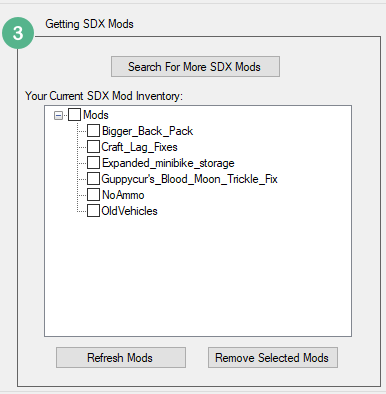
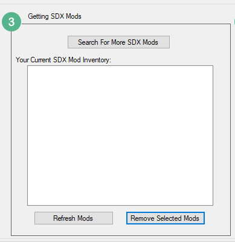
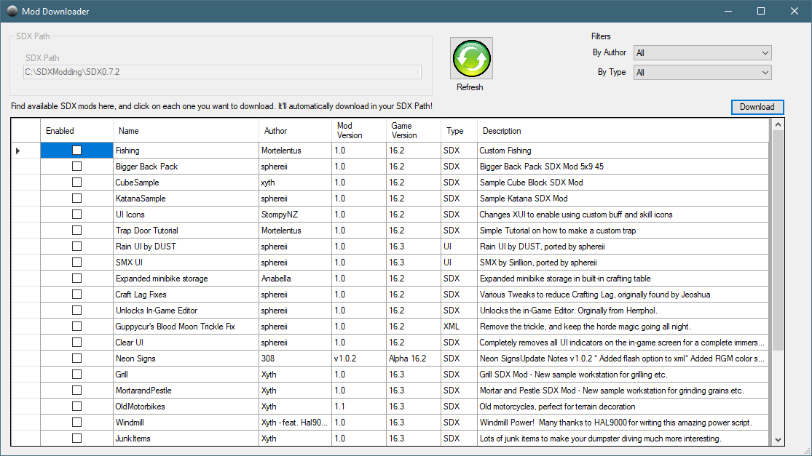
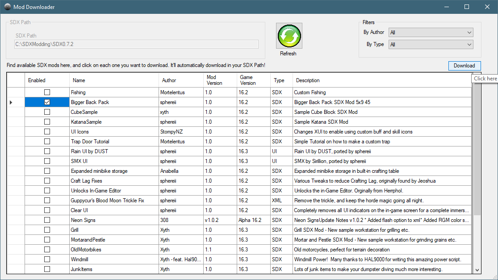
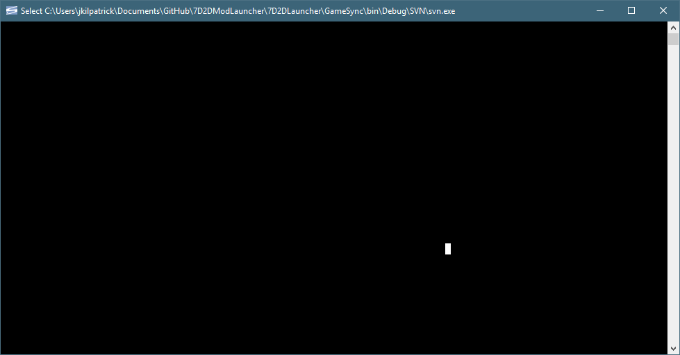
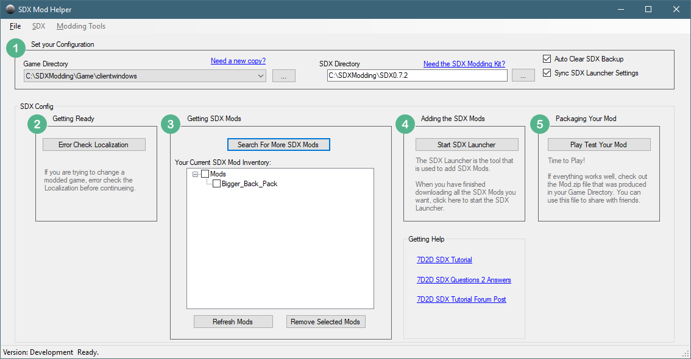

We now want to find which SDX Mods we want to add to this vanilla entry.

In the above, I have some Mods already downloaded. For this step, we are going to remove the already downloaded mods.
We'll click on the Mods check box to enable it, and click on Remove Selected Mods

If we just wanted to delete a few, we could have just selected the ones we wanted to remove, and then click on Remove Selected Mods
Click on the "Search For More SDX Mods"

After a few seconds, the Mod listing will appear.
For this example, we are just going to select the Bigger Back Pack mod, and click on Download.

For each mod that you have selected, you'll see a black box appear. If the mod is small, you may only see a quick flash.

In the SDX Mod Helper main screen, you'll see your Current SDX Mod Inventory updated:

Created with the Personal Edition of HelpNDoc: News and information about help authoring tools and software